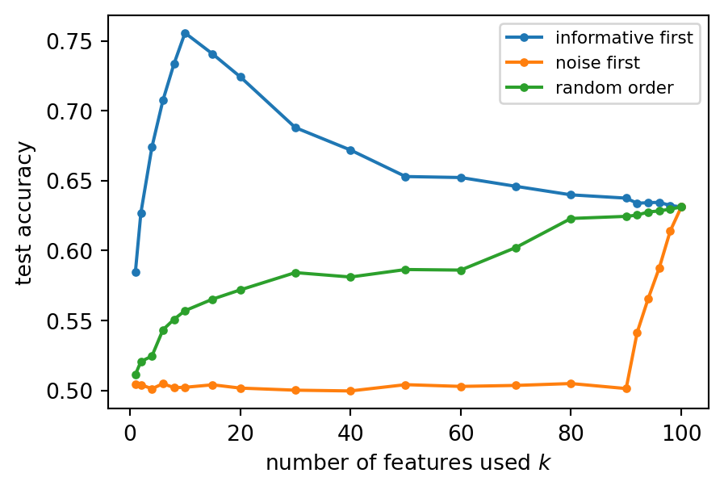
Dimensionality reduction and PCA
Introduction to Artificial Intelligence and Machine Learning 4
Jiabao Xu
Jiabao.Xu@glasgow.ac.uk
Massimo Vassalli
massimo.vassalli@glasgow.ac.uk
From choosing features to building them
In 3b, 4b and 5a we met three families of feature selection (filter, wrapper, embedded: the table at the end of 5a). They all answer the same question: which of the original features should we keep? Today a different question: can we build a few new features that summarise all the original ones? This is feature extraction.
| Selection | Extraction | |
|---|---|---|
| new features are | a subset of the original ones | combinations of all the original ones |
| meaning | kept (a measured quantity) | to be interpreted |
| uses the target | filter, wrapper, embedded: yes | PCA: no; LDA: yes |
| example | SelectKBest, SelectFromModel |
PCA, LinearDiscriminantAnalysis |
Note
Today: why reduce dimensionality; principal component analysis (PCA) from variance to eigenvectors and the SVD; PCA in practice (scaling, components, reconstruction, pipelines); LDA and kernel PCA. CW1 is due tomorrow: PCA is not needed for it.
Why reduce dimensionality?
The number of features \(d\) is the dimensionality of the data. Reducing it helps in four ways:
- performance: with a fixed number of samples, more features eventually make a model worse (next slide)
- interpretability: a model with few inputs is easier to understand and to explain
- computation: memory and training time grow with \(d\) (and some methods with \(d^2\) or \(d^3\))
- visualisation: we can only look at two or three dimensions at a time
Each original feature is one axis of a \(d\)-dimensional space, and each sample a point in it. With 30 features (breast cancer) or 64 pixels (a small image), we cannot see the cloud of points. Yet the points rarely fill the space: features are correlated, and the data often lie close to a lower-dimensional subspace. Finding it is the job of today’s methods.
Peaking
Two classes in \(d = 100\) dimensions: 10 informative features, 90 of pure noise. A classifier is trained on 100 samples with \(k\) features and tested on 1000 new ones (average of 20 repetitions), adding the features in three orders.
Informative first: accuracy peaks at the 10 informative features, then falls: each noise feature adds a weight to estimate from the same 100 samples (the variance of 5a). Noise first: chance level, then small steps up. All orders end at the same model: the peak is reached only by knowing which features to keep.
Principal component analysis
PCA (Pearson 1901, Hotelling 1933) finds new axes for the data, ordered by how much of the variability they capture. Keeping the first few gives a lower-dimensional description that preserves as much variance as possible.
- unsupervised: it uses only \(\mathbf{X}\), never \(\mathbf{y}\)
- linear: each new feature (a principal component) is a linear combination of the original ones
- the new features are uncorrelated with each other
- used to explore and visualise data, to compress it, to remove noise, and as a pre-processing step before a model
We build it in three steps: how to measure the spread of data (variance, covariance); how the spread changes when we rotate the axes; and which rotation is best (an eigenvalue problem).
How spread are the data?
For one feature \(x_j\), the spread around the mean \(\bar x_j\) is the variance; for two features, how they vary together is the covariance:
\[ \sigma_j^2 = \frac{1}{n-1}\sum_{i=1}^{n}(x_{ij} - \bar x_j)^2 \qquad\qquad \mathrm{cov}(x_j, x_l) = \frac{1}{n-1}\sum_{i=1}^{n}(x_{ij} - \bar x_j)(x_{il} - \bar x_l) \]
All variances and covariances form the \(d \times d\) covariance matrix \(\boldsymbol\Sigma\), symmetric, with the variances on the diagonal. Both formulas use deviations from the mean, so we write them with the centred data matrix \(\mathbf{X}_c\): the data matrix \(\mathbf{X}\) with the mean of each column subtracted, \(x_{c,ij} = x_{ij} - \bar x_j\) (every column of \(\mathbf{X}_c\) has mean zero; standardised data are centred too): \[ \boldsymbol\Sigma = \frac{1}{n-1}\,\mathbf{X}_c^{T}\mathbf{X}_c \] the same matrix \(\mathbf{X}_c^{T}\mathbf{X}_c\) whose condition number we studied in 5a. For standardised features, \(\boldsymbol\Sigma\) is the correlation matrix (2a).
Two features of breast cancer
from sklearn.datasets import load_breast_cancer
from sklearn.preprocessing import StandardScaler
cancer = load_breast_cancer()
X, y = cancer.data, 1 - cancer.target # 1 = malignant
names = cancer.feature_names
j1 = list(names).index("mean radius")
j2 = list(names).index("mean concavity")
X2 = StandardScaler().fit_transform(X[:, [j1, j2]]) # standardised, centred
Sigma = np.cov(X2, rowvar=False)
print("covariance matrix:\n", Sigma.round(2))
fig, ax = plt.subplots(figsize=(4, 3.6))
ax.scatter(X2[:, 0], X2[:, 1], s=6, alpha=0.5)
ax.set_xlabel("mean radius (standardised)")
ax.set_ylabel("mean concavity (standardised)")
_ = ax.set_aspect("equal")covariance matrix:
[[1. 0.68]
[0.68 1. ]]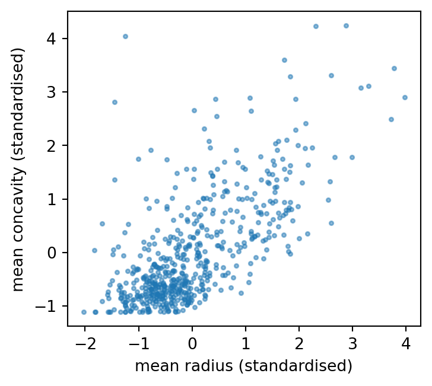
Both variances are 1 (standardised), the covariance is 0.68: large tumours tend to have concave contours. The cloud is elongated along a diagonal. Neither original axis describes it well: the information is shared between the two features.
Rotating the axes
thetas = np.linspace(0, np.pi, 181) # directions from 0 to 180 degrees
var_z = [np.var(X2 @ np.array([np.cos(t), np.sin(t)]), ddof=1) for t in thetas]
best = thetas[np.argmax(var_z)]
fig, axs = plt.subplots(1, 2, figsize=(6, 2.6))
axs[0].plot(np.degrees(thetas), var_z)
axs[0].axvline(np.degrees(best), color="k", linestyle=":")
axs[0].set_xlabel(r"angle $\theta$ (degrees)")
axs[0].set_ylabel("variance of projection")
axs[1].scatter(X2[:, 0], X2[:, 1], s=3, alpha=0.4)
for t, c in [(best, "C1"), (best + np.pi / 2, "C2")]:
axs[1].plot([-3 * np.cos(t), 3 * np.cos(t)], [-3 * np.sin(t), 3 * np.sin(t)], c)
axs[1].set_aspect("equal")
plt.tight_layout()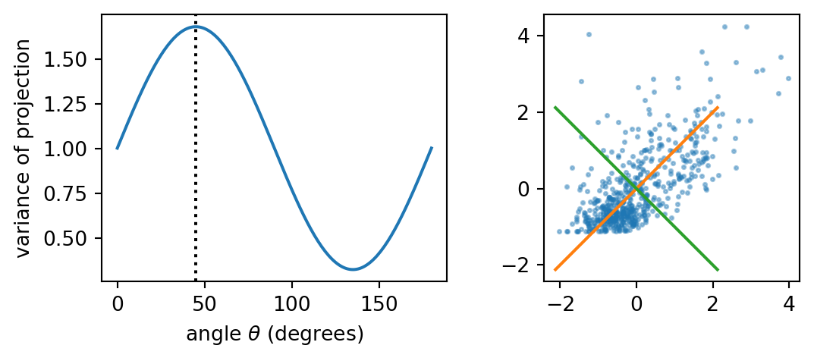
Project the points on a unit vector \(\mathbf{v}\) at angle \(\theta\): sample \(i\) becomes the number \(z_i = \mathbf{v}^{T}\mathbf{x}_i\). How does the variance of the \(z_i\) change with \(\theta\)?
It changes smoothly with the direction: largest along the diagonal at 45° (1.68, orange), smallest perpendicular to it at 135° (0.32, green). These are the principal axes of the cloud.
\(1.68 + 0.32 = 2\) is the total variance, the sum of the variances of the features: here two standardised features with variance 1 each. Rotating redistributes the total variance among the directions, it does not change it.
Maximising under a constraint: Lagrange multipliers
A general problem: maximise a function \(f(\mathbf{v})\) while staying on a constraint \(g(\mathbf{v}) = 0\), a curve (or surface) in the space of \(\mathbf{v}\). Moving along the constraint, \(f\) stops increasing where its level curve touches the constraint curve without crossing it: there the two curves are tangent, and their gradients are parallel: \[ \nabla f(\mathbf{v}) = \lambda\,\nabla g(\mathbf{v}) \] The number \(\lambda\), the Lagrange multiplier, is the ratio between the two gradients. The recipe: build \(\mathcal{L}(\mathbf{v}, \lambda) = f(\mathbf{v}) - \lambda\,g(\mathbf{v})\) and set all its derivatives to zero; the derivative in \(\lambda\) gives back the constraint.
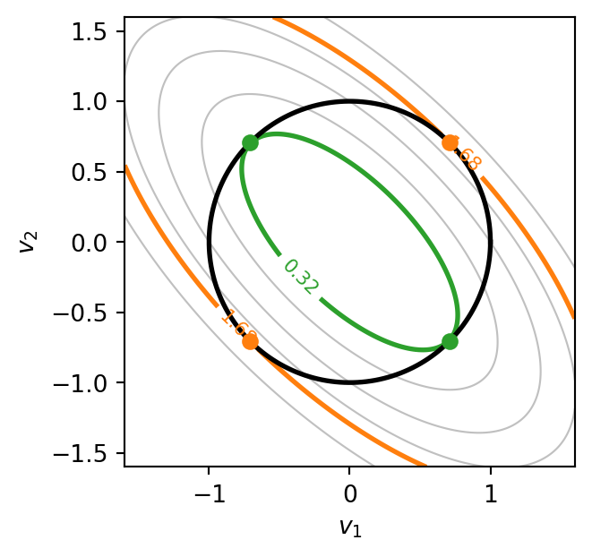
A preview of the next slide. The constraint (black) is the unit circle, \(g = \mathbf{v}^{T}\mathbf{v} - 1 = 0\); the other curves are levels of \(f = \mathbf{v}^{T}\boldsymbol\Sigma\mathbf{v}\), the variance of the projection for our two features. The circle touches the level 1.68 at the orange points (the maximum) and the level 0.32 at the green points (the minimum): exactly the directions found by rotating.
The direction of maximum variance
For centred data, the variance of the projections \(z_i = \mathbf{v}^{T}\mathbf{x}_i\) is a quadratic form in \(\mathbf{v}\):
\[ \mathrm{Var}(z) = \frac{1}{n-1}\sum_{i=1}^{n} (\mathbf{v}^{T}\mathbf{x}_i)^2 = \frac{1}{n-1}\,\mathbf{v}^{T}\mathbf{X}_c^{T}\mathbf{X}_c\,\mathbf{v} = \mathbf{v}^{T}\boldsymbol\Sigma\,\mathbf{v} \]
We want the unit vector that maximises it (without the constraint, the variance would grow without limit by lengthening \(\mathbf{v}\)). With \(f = \mathbf{v}^{T}\boldsymbol\Sigma\mathbf{v}\), \(g = \mathbf{v}^{T}\mathbf{v} - 1\) and the Lagrange multiplier \(\lambda\) of the previous slide:
\[ \mathcal{L}(\mathbf{v}, \lambda) = \mathbf{v}^{T}\boldsymbol\Sigma\mathbf{v} - \lambda(\mathbf{v}^{T}\mathbf{v} - 1) \qquad \nabla_{\mathbf{v}}\mathcal{L} = 2\boldsymbol\Sigma\mathbf{v} - 2\lambda\mathbf{v} = 0 \quad\Rightarrow\quad \boldsymbol\Sigma\mathbf{v} = \lambda\mathbf{v} \]
The best direction is an eigenvector of the covariance matrix. Multiplying by \(\mathbf{v}^{T}\): \(\mathrm{Var}(z) = \mathbf{v}^{T}\boldsymbol\Sigma\mathbf{v} = \lambda\). The variance along an eigenvector is its eigenvalue, so the maximum is the eigenvector with the largest eigenvalue.
Note
Here \(\lambda\) (and \(\lambda_j\) below) is an eigenvalue, the usual symbol in linear algebra; it has nothing to do with the regularisation strength \(\lambda\) of 5a.
Principal components
The symmetric matrix \(\boldsymbol\Sigma\) has \(d\) eigenvalues \(\lambda_1 \ge \lambda_2 \ge \dots \ge \lambda_d \ge 0\) with orthogonal unit eigenvectors \(\mathbf{v}_1, \dots, \mathbf{v}_d\):
- \(\mathbf{v}_1\) is the direction of maximum variance; \(\mathbf{v}_2\) the direction of maximum variance among those orthogonal to \(\mathbf{v}_1\); and so on
- the scores of sample \(i\) are its coordinates on the new axes, \(z_{ij} = \mathbf{v}_j^{T}\mathbf{x}_i\); in matrix form, with \(\mathbf{V} = [\mathbf{v}_1 \cdots \mathbf{v}_d]\): \(\;\mathbf{Z} = \mathbf{X}_c\mathbf{V}\)
- the variance of score \(j\) is \(\lambda_j\); the total variance is unchanged: \(\sum_j \lambda_j = \sum_j \sigma_j^2\)
- keeping only the first \(k\) columns, \(\mathbf{Z} = \mathbf{X}_c\mathbf{V}_k\) is the \(n \times k\) reduced data
evals, evecs = np.linalg.eigh(Sigma) # eigh: for symmetric matrices
order = np.argsort(evals)[::-1] # largest first
evals, evecs = evals[order], evecs[:, order]
print("eigenvalues:", evals.round(2), " sum:", evals.sum().round(2))
print("eigenvectors (columns):\n", evecs.round(3))
Z2 = X2 @ evecs
print("covariance of the scores:\n", np.cov(Z2, rowvar=False).round(2))eigenvalues: [1.68 0.32] sum: 2.0
eigenvectors (columns):
[[ 0.707 -0.707]
[ 0.707 0.707]]
covariance of the scores:
[[1.68 0. ]
[0. 0.32]]The eigenvalues are the maximum and minimum variances found by rotating; the first eigenvector points at 45° (both components \(\pm 0.707\), the sign is arbitrary). The covariance of the scores is diagonal: the new features are uncorrelated. PCA is a rotation that decorrelates the data.
PCA and the singular value decomposition
Any \(n \times d\) matrix can be factorised as \(\mathbf{X}_c = \mathbf{U}\mathbf{S}\mathbf{V}^{T}\) (SVD): \(\mathbf{U}\) (\(n \times n\)) and \(\mathbf{V}\) (\(d \times d\)) orthogonal, \(\mathbf{S}\) diagonal with the singular values \(s_1 \ge s_2 \ge \dots \ge 0\).
Substituting into the covariance matrix, and using \(\mathbf{U}^{T}\mathbf{U} = \mathbf{I}\): \[ \boldsymbol\Sigma = \frac{1}{n-1}\mathbf{X}_c^{T}\mathbf{X}_c = \frac{1}{n-1}\mathbf{V}\mathbf{S}^{T}\mathbf{U}^{T}\mathbf{U}\mathbf{S}\mathbf{V}^{T} = \mathbf{V}\,\frac{\mathbf{S}^{T}\mathbf{S}}{n-1}\,\mathbf{V}^{T} \] an eigendecomposition: the columns of \(\mathbf{V}\) are the principal directions, and \(\lambda_j = s_j^2/(n-1)\). The scores are \(\mathbf{Z} = \mathbf{X}_c\mathbf{V} = \mathbf{U}\mathbf{S}\).
Why compute PCA by SVD? Forming \(\mathbf{X}_c^{T}\mathbf{X}_c\) squares the condition number of \(\mathbf{X}_c\) (5a): small directions are lost to rounding. The SVD works on \(\mathbf{X}_c\) directly and is numerically stable. scikit-learn’s PCA uses the SVD (with fast randomised variants for large data).
Orthogonal matrices are rotations
A square matrix \(\mathbf{Q}\) is orthogonal if \(\mathbf{Q}^{T}\mathbf{Q} = \mathbf{I}\): its columns are unit vectors, perpendicular to each other. Such a matrix preserves lengths and angles, because it preserves inner products: \[ (\mathbf{Q}\mathbf{a})^{T}(\mathbf{Q}\mathbf{b}) = \mathbf{a}^{T}\mathbf{Q}^{T}\mathbf{Q}\,\mathbf{b} = \mathbf{a}^{T}\mathbf{b} \qquad\Rightarrow\qquad \|\mathbf{Q}\mathbf{a}\| = \|\mathbf{a}\| \] A transformation that keeps all lengths and angles is a rigid motion about the origin: a rotation, possibly combined with a mirror reflection (when \(\det\mathbf{Q} = -1\)). It changes the point of view, not the shape.
Back to the SVD, \(\mathbf{A} = \mathbf{U}\mathbf{S}\mathbf{V}^{T}\): \(\mathbf{U}\) and \(\mathbf{V}\) (hence \(\mathbf{V}^{T}\)) are orthogonal, so they are rotations, and only the diagonal \(\mathbf{S}\) changes lengths. Applied to a vector \(\mathbf{a}\), the product works from the right, in three simple steps: \[ \mathbf{A}\mathbf{a} = \mathbf{U}\big(\mathbf{S}(\mathbf{V}^{T}\mathbf{a})\big): \qquad \text{rotate } (\mathbf{V}^{T}), \quad \text{stretch along the axes } (\mathbf{S}), \quad \text{rotate again } (\mathbf{U}) \]
The geometry of the SVD
The three steps on the unit circle, for a \(2 \times 2\) matrix (the arrows are the two unit vectors along the axes):
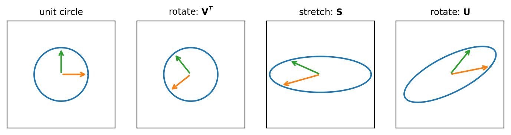
The first rotation leaves the circle a circle (only the arrows turn); the stretch makes it an ellipse with semi-axes \(s_1\) and \(s_2\); the second rotation tilts it. For PCA: the data cloud is (roughly) an ellipse, \(\mathbf{V}\) gives the directions of its axes, the singular values their lengths. See also SVD in pictures.
Why two rotations? A symmetric matrix like \(\boldsymbol\Sigma\) needs only one: \(\boldsymbol\Sigma = \mathbf{V}\boldsymbol\Lambda\mathbf{V}^{T}\) turns to its eigenvector axes, stretches, and turns back. A general matrix like \(\mathbf{X}_c\) (\(n \times d\)) maps one space into another (\(\mathbb{R}^d \to \mathbb{R}^n\)): \(\mathbf{V}^{T}\) aligns the special input directions with the axes, \(\mathbf{S}\) stretches them, \(\mathbf{U}\) places them in the output space. PCA needs only the input side, \(\mathbf{V}\).
PCA step by step
- Centre the data: subtract the mean of each feature, \(\mathbf{X}_c\).
- Scale (usually): divide by the standard deviation when the features have different units.
- Decompose: SVD of \(\mathbf{X}_c\), or eigendecomposition of \(\boldsymbol\Sigma\).
- Order the components by decreasing \(\lambda_j\).
- Choose the number of components \(k\).
- Project: \(\mathbf{Z} = \mathbf{X}_c\mathbf{V}_k\), the \(n \times k\) scores.
- Use the scores: plot them, or feed them to a model.
- Reconstruct if needed: \(\hat{\mathbf{X}}_c = \mathbf{Z}\mathbf{V}_k^{T}\).
As an \((H, L, A)\) triple: the model is a linear projection onto \(k\) orthogonal directions; the strategy is to maximise the variance of the projections (equivalently, minimise the reconstruction error, see later); the algorithm is the SVD. There is no target and no prediction: PCA is a transformer (3b), with fit, transform and inverse_transform.
PCA in scikit-learn
PCA follows the transformer API of 3b. It centres the data, but does not scale them. Wine, without and with standardisation:
from sklearn.datasets import load_wine
from sklearn.decomposition import PCA
from sklearn.pipeline import make_pipeline
wine = load_wine()
Xw, yw = wine.data, wine.target
raw = PCA().fit(Xw)
std = make_pipeline(StandardScaler(), PCA()).fit(Xw)
print("explained variance ratio, raw :", raw.explained_variance_ratio_[:4].round(3))
print("explained variance ratio, scaled :", std[-1].explained_variance_ratio_[:4].round(3))
j = np.argmax(np.abs(raw.components_[0]))
print(f"raw PC1 is dominated by '{wine.feature_names[j]}' "
f"(variance {Xw[:, j].var():.0f}; next largest {np.sort(Xw.var(axis=0))[-2]:.0f})")explained variance ratio, raw : [0.998 0.002 0. 0. ]
explained variance ratio, scaled : [0.362 0.192 0.111 0.071]
raw PC1 is dominated by 'proline' (variance 98610; next largest 203)Without scaling, the first component explains 99.8% of the variance, and it is simply proline, measured in units that give it a variance of about 99,000 against at most a few hundred for the others. PCA maximises variance, so it follows the units. After standardisation, every feature starts with variance 1 and the first component explains 36%: a genuine combination. Neither result says which version is more useful for a target: variance is not relevance. Standardising is a choice, “treat every feature as equally important a priori”; whether it helps a prediction must be measured, next slide.
The wine data in two dimensions
The 13 wine features in a plane, three ways. The CV accuracy of a logistic regression on the two coordinates measures how much class information each view keeps:
from sklearn.model_selection import StratifiedKFold, cross_val_score
cv = StratifiedKFold(5, shuffle=True, random_state=0) # how to split: 5 stratified folds
Zw = std.transform(Xw) # scaled scores, 13 columns
views = [("alcohol vs malic acid", Xw[:, :2]), ("PCA, not scaled", raw.transform(Xw)[:, :2]), ("PCA, standardised", Zw[:, :2])]
fig, axs = plt.subplots(1, 3, figsize=(9, 2.4))
for ax, (title, P2) in zip(axs, views):
acc = cross_val_score(make_pipeline(StandardScaler(), LogisticRegression()), P2, yw, cv=cv).mean()
for c in range(3):
ax.scatter(P2[yw == c, 0], P2[yw == c, 1], s=6, label=f"class {c}")
ax.set_title(f"{title}\nCV accuracy {acc:.2f}", fontsize=9)
ax.set_xticks([]); ax.set_yticks([])
_ = axs[0].legend(fontsize=7)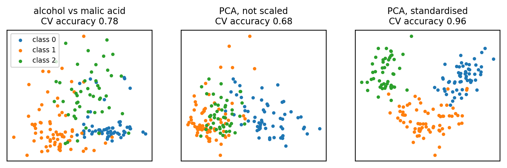
Two original features keep part of the information (0.78). Unscaled PCA is worse (0.68): its components are proline and magnesium, the features with the largest units. Standardised PCA keeps almost all of it (0.96; all 13 features: 0.98) without seeing the labels; the best of the 78 original pairs reaches 0.91, but finding it needs the labels. PCA as an exploration tool, before any model (CW2).
Loadings: what the components mean
Each component is a weighted sum of the original (standardised) features; the weights, the entries of \(\mathbf{v}_j\), are the loadings (components_, one row per component):
V = std[-1].components_
fig, axs = plt.subplots(2, 1, figsize=(5, 3.8), sharex=True)
for ax, k in zip(axs, [0, 1]):
ax.bar(range(13), V[k], color=f"C{k}")
ax.axhline(0, color="k", linewidth=0.6)
ax.set_ylabel(f"PC{k + 1} loading")
axs[1].set_xticks(range(13), wine.feature_names, rotation=70, fontsize=7)
plt.tight_layout()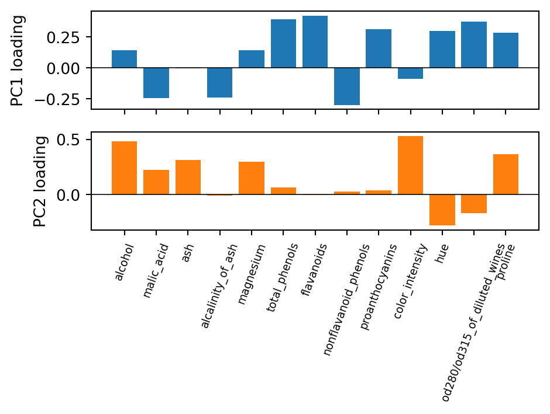
PC1 opposes the phenolic compounds (flavanoids, total phenols, OD280) to malic acid and alcalinity: a “phenolic content” axis. PC2 is dominated by alcohol, colour intensity and proline: an “intensity” axis. Interpretation needs domain knowledge and is not always possible: when many features have similar loadings, a component is a mixture without a simple name.
How many components?
The explained variance ratio of component \(j\) and the cumulative ratio of the first \(k\):
\[ r_j = \frac{\lambda_j}{\sum_{l=1}^{d}\lambda_l} \qquad\qquad R_k = \sum_{j=1}^{k} r_j \]
pca_bc = make_pipeline(StandardScaler(), PCA()).fit(X)
lam = pca_bc[-1].explained_variance_
R = np.cumsum(pca_bc[-1].explained_variance_ratio_)
print("components for 90% and 95%:", np.searchsorted(R, 0.90) + 1, np.searchsorted(R, 0.95) + 1)
print("eigenvalues > 1 (Kaiser):", np.sum(lam > 1))
fig, ax = plt.subplots(figsize=(5, 3.3))
ax.bar(range(1, 31), lam, label=r"eigenvalue $\lambda_j$ (scree)")
ax2 = ax.twinx()
ax2.plot(range(1, 31), R, "C1o-", markersize=3, label="cumulative $R_k$")
ax2.axhline(0.95, color="C1", linestyle=":")
ax.set_xlabel("component")
ax.set_ylabel(r"$\lambda_j$")
ax2.set_ylabel("$R_k$")
_ = fig.legend(loc="center right", fontsize=8, bbox_to_anchor=(0.85, 0.5))components for 90% and 95%: 7 10
eigenvalues > 1 (Kaiser): 6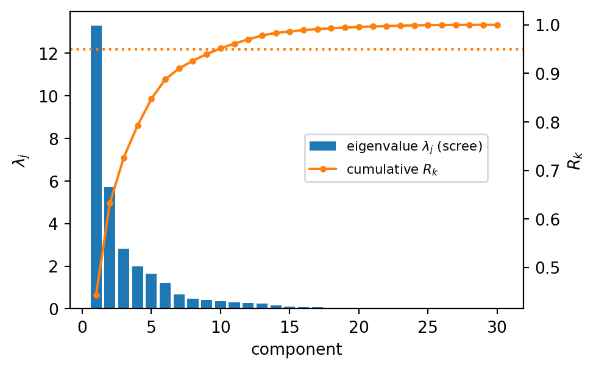
Rules for choosing \(k\)
- variance threshold: the smallest \(k\) with \(R_k \ge 90\%\) or \(95\%\); here 7 and 10 of 30. In scikit-learn,
PCA(n_components=0.95)does it directly. - scree plot: the bar chart of the \(\lambda_j\); keep the components before the “elbow” where the bars flatten into a rubble of small values (scree is the rubble at the foot of a cliff). Here the elbow is after 2 or 3 components.
- Kaiser criterion: for standardised data, keep components with \(\lambda_j > 1\), i.e. those that carry more variance than a single original feature; here 6.
- purpose: for a plot, \(k = 2\) or 3; for a model, choose \(k\) by cross-validation, like any hyperparameter (4b), as we do below.
The rules disagree (2, 6, 7 or 10 components here): they are heuristics, not laws. Remember that variance is not the same as usefulness for a prediction: a component with little variance can still separate the classes, and one with a lot of variance can be irrelevant to the target. Only cross-validation, which uses the target, measures that.
Breast cancer in two dimensions
Zbc = pca_bc.transform(X)
fig, ax = plt.subplots(figsize=(4.5, 3.6))
for c, lab in [(0, "benign"), (1, "malignant")]:
ax.scatter(Zbc[y == c, 0], Zbc[y == c, 1], s=6, alpha=0.6, label=lab)
r = pca_bc[-1].explained_variance_ratio_
ax.set_xlabel(f"PC1 ({100 * r[0]:.0f}%)")
ax.set_ylabel(f"PC2 ({100 * r[1]:.0f}%)")
_ = ax.legend(fontsize=8)
top = np.argsort(np.abs(pca_bc[-1].components_[0]))[::-1][:4]
print("largest PC1 loadings:", ", ".join(names[top]))largest PC1 loadings: mean concave points, mean concavity, worst concave points, mean compactness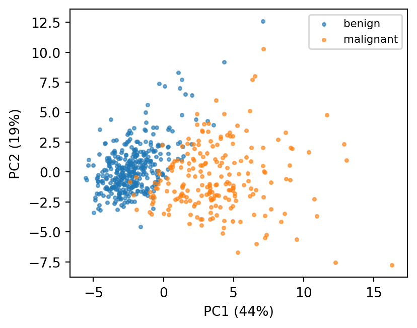
Two components, 63% of the variance of 30 features, and the two diagnoses already separate along PC1. Its largest loadings are the concave points, concavity and compactness features: an “irregular contour” axis, the information that the wrapper of 4b and the Lasso of 5a also kept. The malignant cloud is wider: malignant tumours are more variable.
Reconstruction
Projecting on \(k < d\) components loses information. Going back, \(\hat{\mathbf{X}}_c = \mathbf{Z}\mathbf{V}_k^{T} = \mathbf{X}_c\mathbf{V}_k\mathbf{V}_k^{T}\), gives the best rank-\(k\) approximation of the data:
\[ \sum_{i=1}^{n}\|\mathbf{x}_i - \hat{\mathbf{x}}_i\|^2 = (n-1)\sum_{j=k+1}^{d}\lambda_j \] The squared reconstruction error is the variance of the discarded components. Maximising the variance kept and minimising the reconstruction error are the same problem: two equivalent strategies \(L\) for PCA. The fraction of variance lost is \(1 - R_k\).
Xs = pca_bc[0].transform(X) # standardised data
n = len(Xs)
for k in [2, 5, 10]:
p = PCA(n_components=k).fit(Xs)
X_hat = p.inverse_transform(p.transform(Xs)) # project and go back
err = np.sum((Xs - X_hat)**2)
print(f"k = {k:2d}: reconstruction error {err:7.1f} "
f"(n-1) x discarded eigenvalues {(n - 1) * lam[k:].sum():7.1f} lost {1 - R[k - 1]:.1%}")k = 2: reconstruction error 6274.4 (n-1) x discarded eigenvalues 6274.4 lost 36.8%
k = 5: reconstruction error 2605.9 (n-1) x discarded eigenvalues 2605.9 lost 15.3%
k = 10: reconstruction error 826.7 (n-1) x discarded eigenvalues 826.7 lost 4.8%A new dataset: handwritten digits
scikit-learn’s digits: 1797 images of handwritten digits (0 to 9), scanned and reduced to \(8 \times 8\) pixels, each pixel a grey level from 0 (white) to 16 (black). To a learning method an image is just a vector: the 64 pixels, read row by row, are the \(d = 64\) features of a sample, all in the same unit (no scaling needed). The target is the digit; the classical task is to recognise it (a classification problem with 10 classes, and a favourite of the neural networks of weeks 8–10). Today we ignore the labels and ask: do 64 numbers per image carry 64 independent pieces of information?
from sklearn.datasets import load_digits
digits = load_digits()
Xg, yg = digits.data, digits.target
print("data matrix:", Xg.shape, " pixel values:", Xg.min(), "to", Xg.max())
fig, axs = plt.subplots(2, 10, figsize=(9, 2))
for ax, i in zip(axs.ravel(), range(20)):
ax.imshow(Xg[i].reshape(8, 8), cmap="gray_r")
ax.set_title(yg[i], fontsize=8)
ax.axis("off")data matrix: (1797, 64) pixel values: 0.0 to 16.0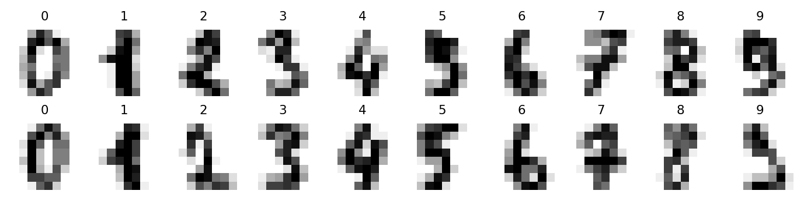
Neighbouring pixels are strongly correlated (strokes are continuous), and the corners are almost always white: the 64 features are far from independent. PCA should find a much smaller number of directions that describe the images.
Eigen-digits
The principal directions of the digits are themselves \(8 \times 8\) images:
pca_g = PCA().fit(Xg)
fig, axs = plt.subplots(1, 9, figsize=(9, 1.4))
axs[0].imshow(pca_g.mean_.reshape(8, 8), cmap="gray_r")
axs[0].set_title("mean", fontsize=8)
for k in range(8):
axs[k + 1].imshow(pca_g.components_[k].reshape(8, 8), cmap="RdBu_r")
axs[k + 1].set_title(f"PC{k + 1}", fontsize=8)
for ax in axs:
ax.axis("off")
Rg = np.cumsum(pca_g.explained_variance_ratio_)
print("components for 80%, 90%, 95% of the variance:",
[int(np.searchsorted(Rg, t)) + 1 for t in (0.8, 0.9, 0.95)])components for 80%, 90%, 95% of the variance: [13, 21, 29]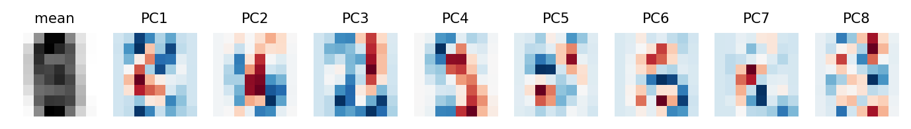
Every digit is the mean image plus a weighted sum of these patterns, red adding ink and blue removing it; the weights are its scores. The patterns are not digits: they are contrasts between regions of the image where ink tends to appear together, coarse in the first components and finer in the later ones. 21 of the 64 directions hold 90% of the variance: the images live close to a much smaller subspace than the pixel space.
Reconstructing digits
ks_g = [2, 5, 10, 20, 40, 64]
idx = [0, 1, 2, 3, 4, 7] # six example digits
fig, axs = plt.subplots(len(idx), len(ks_g) + 1, figsize=(6, 5.2))
for col, k in enumerate(ks_g):
p = PCA(n_components=k).fit(Xg)
rec = p.inverse_transform(p.transform(Xg[idx]))
axs[0, col + 1].set_title(f"k = {k}", fontsize=8)
for row in range(len(idx)):
axs[row, col + 1].imshow(rec[row].reshape(8, 8), cmap="gray_r")
for row, i in enumerate(idx):
axs[row, 0].imshow(Xg[i].reshape(8, 8), cmap="gray_r")
axs[0, 0].set_title("original", fontsize=8)
for ax in axs.ravel():
ax.axis("off")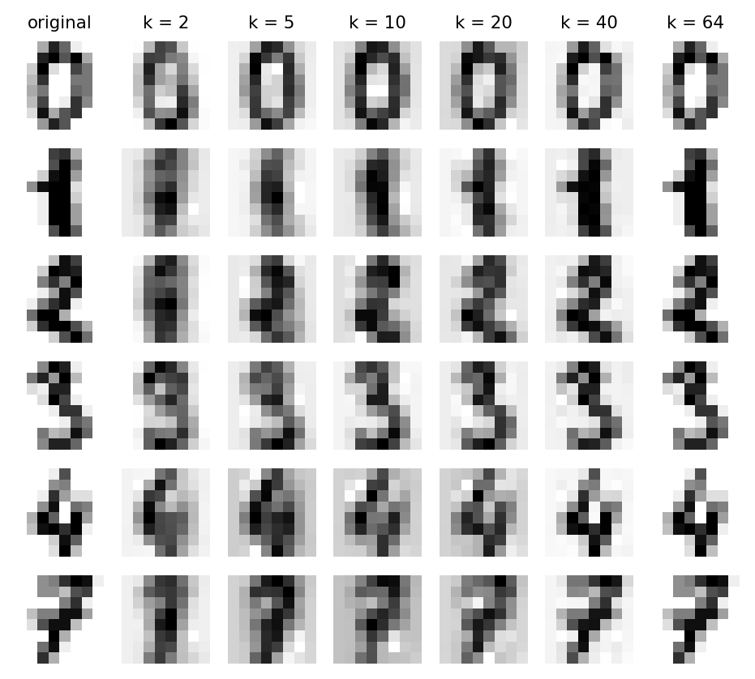
With 2 components every digit looks like a blurred average; with 10 most are recognisable; with 20 the differences from the original are minor. Storing 20 scores per image (plus the shared mean and 20 components) instead of 64 pixels is compression: the same idea, with other bases, behind image and audio formats.
Denoising
The discarded components carry little variance: often mostly noise. Add noise to the digits, fit PCA on the noisy images, keep the main components, and reconstruct:
rng = np.random.default_rng(0)
Xnoisy = Xg + rng.normal(0, 4, Xg.shape) # pixel values range 0-16
pca_n = PCA(n_components=0.5).fit(Xnoisy) # keep 50% of the variance
Xden = pca_n.inverse_transform(pca_n.transform(Xnoisy))
fig, axs = plt.subplots(3, 8, figsize=(7, 2.4))
for col in range(8):
for row, img in enumerate([Xg, Xnoisy, Xden]):
axs[row, col].imshow(img[col].reshape(8, 8), cmap="gray_r")
axs[row, col].axis("off")
for row, lab in enumerate(["original", "noisy", "denoised"]):
axs[row, 0].set_title(lab, fontsize=7, loc="left")
print(f"components kept: {pca_n.n_components_}; mean squared error to the clean images: "
f"noisy {np.mean((Xnoisy - Xg)**2):.1f}, denoised {np.mean((Xden - Xg)**2):.1f}")components kept: 12; mean squared error to the clean images: noisy 16.0, denoised 7.2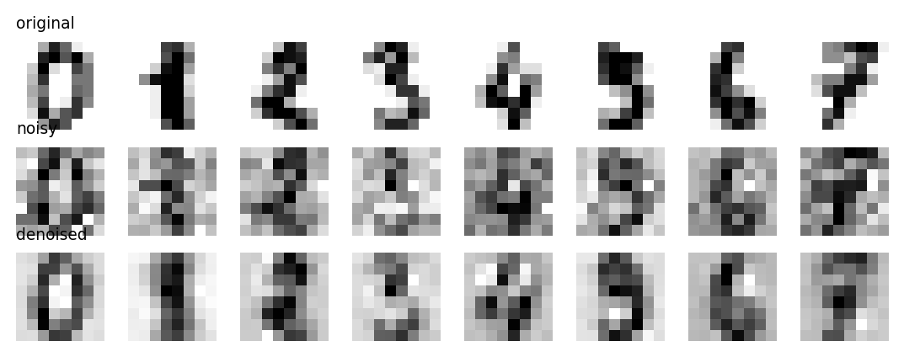
The noise is spread evenly over all 64 directions, while the digits concentrate in the first few. Keeping only those removes most of the noise and little of the signal: the error to the clean images drops by more than half. The same logic makes PCA a useful first step for noisy spectra and sensor data.
PCA in a pipeline
PCA as pre-processing before a classifier: scaling, PCA with \(k\) components, logistic regression. \(k\) is a hyperparameter, chosen by cross-validation on the training set, and compared with the filter SelectKBest keeping \(k\) original features:
from sklearn.feature_selection import SelectKBest, f_classif
from sklearn.model_selection import StratifiedKFold, cross_val_score, train_test_split
X_train, X_test, y_train, y_test = train_test_split(
X, y, test_size=0.25, stratify=y, random_state=0)
cv = StratifiedKFold(5, shuffle=True, random_state=0) # how to split: 5 stratified folds
ks_p = [1, 2, 3, 5, 7, 10, 15, 20, 30]
res = {"PCA": [], "SelectKBest": []}
for k in ks_p:
for name, step in [("PCA", PCA(n_components=k)), ("SelectKBest", SelectKBest(f_classif, k=k))]:
pipe = make_pipeline(StandardScaler(), step, LogisticRegression())
res[name].append(cross_val_score(pipe, X_train, y_train, cv=cv).mean())
fig, ax = plt.subplots(figsize=(5, 3.3))
for name, vals in res.items():
ax.plot(ks_p, vals, "o-", label=name)
ax.set_xlabel("number of features $k$")
ax.set_ylabel("CV accuracy")
_ = ax.legend()
for k in [2, 5, 10, 20, 30]:
i = ks_p.index(k)
print(f"k = {k:2d}: PCA {res['PCA'][i]:.3f} SelectKBest {res['SelectKBest'][i]:.3f}")k = 2: PCA 0.958 SelectKBest 0.930
k = 5: PCA 0.972 SelectKBest 0.944
k = 10: PCA 0.986 SelectKBest 0.958
k = 20: PCA 0.977 SelectKBest 0.981
k = 30: PCA 0.977 SelectKBest 0.977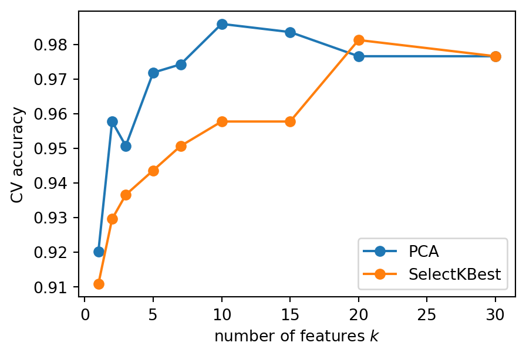
Reading the comparison
- With very few features, PCA wins clearly: two components summarise all 30 features, while two selected features see only two measurements. Each principal component pools information from every feature.
- Five components come close to the full model (0.972 against 0.977 with all 30 features); ten slightly exceed it (0.986).
SelectKBestneeds about 20 features. Differences of 0.01 are about one validation sample per fold: within the spread of 4b, so the safe reading is that 5–10 components lose nothing. - PCA does not reduce what must be measured: every component needs all 30 features. Selection does: a model on 5 features needs only 5 measurements per patient. For a sensor system or a clinical test, that may decide.
Warning
PCA must be inside the pipeline, after the scaler: the mean, the scaling and the components are learned on the training folds only, like any transformer (3b). Fitting PCA on all the data before splitting leaks information about the validation and test samples. Tune \(k\) with GridSearchCV over pca__n_components (4b).
Selection or extraction?
| Feature selection (3b, 4b, 5a) | PCA | |
|---|---|---|
| new features | subset of the original | linear combinations of all the original |
| uses the target | yes (filter, wrapper, embedded) | no |
| interpretability | kept: each feature is a measurement | loadings must be interpreted |
| measurements needed at prediction time | only the selected ones | all |
| handles correlated features | keeps one, drops the others (often arbitrarily) | merges them into one component |
| best when | few features matter; cost of measuring; explanation | many correlated features; visualisation; compression; noise |
The two can be combined: select first to remove irrelevant features, then extract to merge correlated ones. And the choice can be made like any other: inside a pipeline, by cross-validation.
Beyond PCA: using the labels
PCA keeps the directions of largest variance, but variance is not the same as separation. Two classes, elongated along \(x_1\) and separated along \(x_2\), projected on PC1 and on the axis that best separates the classes (found by the method of the next slide):
from sklearn.discriminant_analysis import LinearDiscriminantAnalysis
rng = np.random.default_rng(1)
n_c = 200
Xs2 = np.vstack([rng.normal([0, 0], [3, 0.5], (n_c, 2)), rng.normal([0, 1.6], [3, 0.5], (n_c, 2))])
ys2 = np.r_[np.zeros(n_c), np.ones(n_c)]
z_pca = PCA(n_components=1).fit_transform(Xs2).ravel()
z_lda = LinearDiscriminantAnalysis(n_components=1).fit_transform(Xs2, ys2).ravel() # next slide
fig, axs = plt.subplots(1, 3, figsize=(8, 2.6))
axs[0].scatter(Xs2[:, 0], Xs2[:, 1], c=ys2, cmap="coolwarm", s=5)
axs[0].set_title("data", fontsize=9)
for ax, z, title in [(axs[1], z_pca, "projection on PC1"), (axs[2], z_lda, "projection on the separating axis")]:
for c in [0, 1]:
ax.hist(z[ys2 == c], bins=30, alpha=0.6, color=f"C{3 * c}")
ax.set_title(title, fontsize=9)
ax.set_yticks([])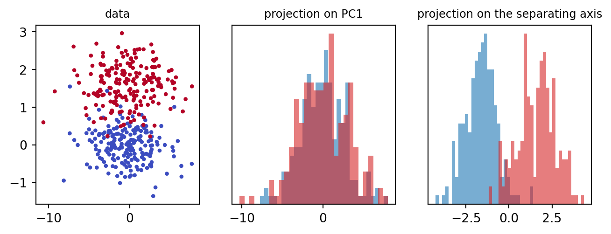
PC1 is the long horizontal axis: it carries most of the variance and none of the separation, and the two classes overlap completely. A projection that uses the labels finds the vertical direction, where the classes are apart. This is the warning of the previous slides made visible: unsupervised reduction can throw away exactly what the model needs.
Linear discriminant analysis (LDA)
Fisher (1936): find the direction \(\mathbf{v}\) along which the class means are far apart relative to the spread within each class.
With class means \(\bar{\mathbf{x}}_k\), \(n_k\) samples in class \(k\), and overall mean \(\bar{\mathbf{x}}\), define the within-class and between-class scatter matrices: \[ \mathbf{S}_W = \sum_{k=1}^{c}\sum_{i \in k}(\mathbf{x}_i - \bar{\mathbf{x}}_k)(\mathbf{x}_i - \bar{\mathbf{x}}_k)^{T} \qquad \mathbf{S}_B = \sum_{k=1}^{c} n_k(\bar{\mathbf{x}}_k - \bar{\mathbf{x}})(\bar{\mathbf{x}}_k - \bar{\mathbf{x}})^{T} \] and maximise the Fisher ratio of between- to within-class variance along \(\mathbf{v}\): \[ J(\mathbf{v}) = \frac{\mathbf{v}^{T}\mathbf{S}_B\mathbf{v}}{\mathbf{v}^{T}\mathbf{S}_W\mathbf{v}} \quad\Rightarrow\quad \mathbf{S}_W^{-1}\mathbf{S}_B\,\mathbf{v} = \lambda\mathbf{v} \] Again an eigenvalue problem, as for PCA, with \(\mathbf{S}_W^{-1}\mathbf{S}_B\) in place of \(\boldsymbol\Sigma\).
- supervised: it needs \(\mathbf{y}\), so in a pipeline it is fitted on the training folds only, like any model
- at most \(c - 1\) components: \(\mathbf{S}_B\) is built from \(c\) means, so it has rank \(c - 1\) (one axis for two classes, two for wine)
- it is also a classifier: assuming Gaussian classes with a shared covariance matrix, it assigns each sample to the most probable class, with linear boundaries (like logistic regression)
PCA and LDA on wine
lda = make_pipeline(StandardScaler(), LinearDiscriminantAnalysis(n_components=2))
Zl = lda.fit(Xw, yw).transform(Xw)
fig, axs = plt.subplots(1, 2, figsize=(8, 3.2))
for ax, Zp, title in [(axs[0], Zw, "PCA (unsupervised)"), (axs[1], Zl, "LDA (supervised)")]:
for c in range(3):
ax.scatter(Zp[yw == c, 0], Zp[yw == c, 1], s=8, label=f"class {c}")
ax.set_title(title, fontsize=9)
ax.set_xlabel("component 1")
axs[0].set_ylabel("component 2")
_ = axs[0].legend(fontsize=7)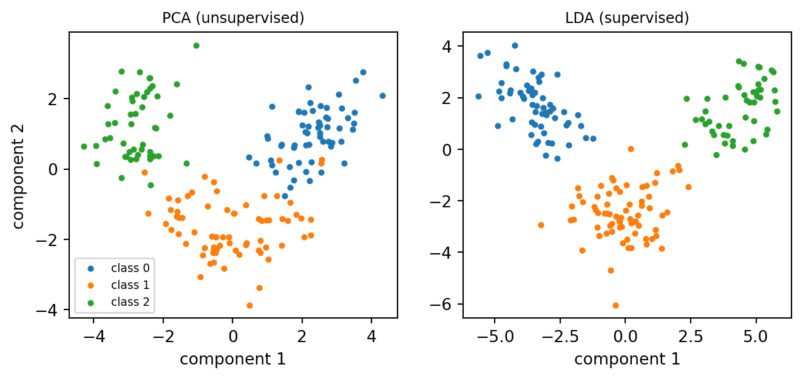
Both reduce 13 features to 2. PCA, blind to the labels, already shows three groups, touching at the edges; LDA, built to separate them, shows three compact clouds with clear gaps between them. Do not read the LDA plot as evidence that the classes are easy to separate: the axes were chosen on these labels, so the plot is optimistic, like a training score. Its honest test is cross-validation.
LDA as a classifier
cv = StratifiedKFold(5, shuffle=True, random_state=0) # how to split: 5 stratified folds
for name, est in [("LDA ", make_pipeline(StandardScaler(), LinearDiscriminantAnalysis())),
("logistic regression", make_pipeline(StandardScaler(), LogisticRegression())),
("PCA(2) + logistic ", make_pipeline(StandardScaler(), PCA(2), LogisticRegression())),
("LDA(2) + logistic ", make_pipeline(StandardScaler(), LinearDiscriminantAnalysis(n_components=2),
LogisticRegression()))]:
print(f"{name}: CV accuracy on wine = {cross_val_score(est, Xw, yw, cv=cv).mean():.3f}")LDA : CV accuracy on wine = 0.994
logistic regression: CV accuracy on wine = 0.983
PCA(2) + logistic : CV accuracy on wine = 0.961
LDA(2) + logistic : CV accuracy on wine = 0.989On wine, LDA is as accurate as logistic regression, and two LDA components lose nothing: they contain all the class information. Two principal components lose a little. LDA is a good baseline for CW2 when classes are roughly Gaussian; with many features and few samples, \(\mathbf{S}_W\) becomes ill-conditioned (5a), and LinearDiscriminantAnalysis(solver="lsqr", shrinkage="auto") regularises it.
Non-linear structure: new features
PCA finds linear subspaces: it can only rotate and project. Two concentric rings cannot be separated by any straight projection. But a new feature, the squared distance from the centre \(x_1^2 + x_2^2\), separates them with a flat cut:
from sklearn.datasets import make_circles
Xc2, yc2 = make_circles(n_samples=400, factor=0.4, noise=0.06, random_state=0)
phi3 = Xc2[:, 0]**2 + Xc2[:, 1]**2 # a non-linear feature
fig, axs = plt.subplots(1, 2, figsize=(5.5, 2.7))
axs[0].scatter(Xc2[:, 0], Xc2[:, 1], c=yc2, cmap="coolwarm", s=5)
axs[0].set_title("data: $(x_1, x_2)$", fontsize=9)
axs[0].set_aspect("equal")
axs[1].scatter(Xc2[:, 0], phi3, c=yc2, cmap="coolwarm", s=5)
axs[1].axhline(0.45, color="k", linestyle=":")
axs[1].set_title(r"new feature: $(x_1,\; x_1^2 + x_2^2)$", fontsize=9)
for ax in axs:
ax.set_xticks([]); ax.set_yticks([])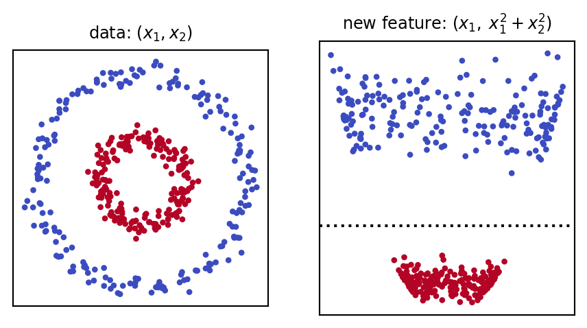
This is the polynomial-features idea of 3b: map each sample to a richer set of features \(\boldsymbol\phi(\mathbf{x})\), then work linearly there. Here we knew which feature to add. In general we do not, and the number of candidate features explodes: all products up to degree 3 of 30 features are already 5455. The kernel trick avoids building them at all.
Kernel PCA: the kernel trick
PCA can be computed from inner products between samples only. The \(n \times n\) matrix \(\mathbf{X}_c\mathbf{X}_c^{T}\), whose entries are \(\mathbf{x}_i^{T}\mathbf{x}_j\), has eigenvectors \(\mathbf{u}_j\) (the columns of \(\mathbf{U}\) of the SVD) and eigenvalues \(s_j^2\), and the scores are \(\mathbf{Z} = \mathbf{U}\mathbf{S}\). Kernel PCA replaces every inner product with one computed in the feature space, \(\boldsymbol\phi(\mathbf{x}_i)^\mathsf{T}\,\boldsymbol\phi(\mathbf{x}_j)\), given directly by a kernel function \(K(\mathbf{x}_i, \mathbf{x}_j)\), without ever computing \(\boldsymbol\phi\).
- example: for \(\boldsymbol\phi(\mathbf{x}) = (x_1^2,\; \sqrt{2}\,x_1x_2,\; x_2^2)\), one checks that \(\boldsymbol\phi(\mathbf{a})^\mathsf{T}\,\boldsymbol\phi(\mathbf{b}) = (\mathbf{a}^{T}\mathbf{b})^2\): the degree-2 polynomial kernel, three features computed with one product of two dimensions
- the Gaussian (RBF) kernel \(K(\mathbf{x}_i, \mathbf{x}_j) = e^{-\gamma\|\mathbf{x}_i - \mathbf{x}_j\|^2}\) corresponds to infinitely many features. Read it as a similarity: 1 for identical samples, close to 0 for distant ones; \(\gamma\) sets what “distant” means
from sklearn.decomposition import KernelPCA
Zp = PCA(n_components=2).fit_transform(Xc2)
Zk = KernelPCA(n_components=3, kernel="rbf", gamma=2).fit_transform(Xc2)
fig, axs = plt.subplots(1, 2, figsize=(5.5, 2.7))
for ax, P2, title in [(axs[0], Zp, "PCA: components 1, 2"),
(axs[1], Zk[:, [0, 2]], "kernel PCA: components 1, 3")]:
ax.scatter(P2[:, 0], P2[:, 1], c=yc2, cmap="coolwarm", s=5)
ax.set_title(title, fontsize=9)
ax.set_xticks([]); ax.set_yticks([])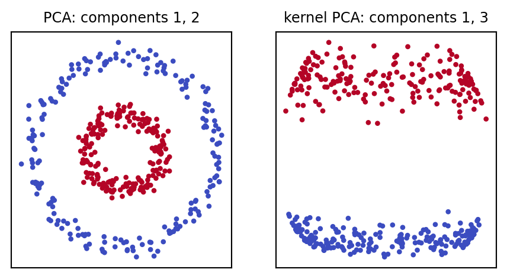
PCA only rotates the rings. With the RBF kernel, the rings are separated along the third component (vertical axis), and a linear model would now work. Why not the first? The first two follow the largest variance in the new space, which is the position around the outer ring: once again, variance is not separation. The kernel, \(\gamma\) and the number of components are hyperparameters, chosen by cross-validation. Kernel PCA builds an \(n \times n\) matrix, so it is costly for large \(n\), and its components have no loadings. The kernel trick returns in 7a with support vector machines; for visualising complex structure, t-SNE and UMAP (7b) are the usual tools.
Limitations of PCA
- linear: it finds flat subspaces; curved structures need kernel PCA, manifold methods (7b) or autoencoders (neural networks, weeks 8–10)
- depends on scaling: it follows the units unless the features are standardised
- sensitive to outliers: variance is a squared quantity, so a few extreme points can rotate the components
- unsupervised: maximum variance is not maximum relevance for a target (LDA, or selection, use the labels)
- interpretability: components mix all features; loadings help, but not always
- all features needed at prediction time
None of these makes PCA less useful: it remains the first tool to look at a new dataset, to compress it and to clean it. The point is to know what it optimises (variance, in the units given) and to check, by cross-validation, whether that is what the task needs.
Summary: dimensionality reduction as (H, L, A)
| PCA | LDA | Kernel PCA | |
|---|---|---|---|
| Model \(H\) | linear projection on \(k\) orthogonal directions | linear projection on \(\le c - 1\) directions | projection in an implicit non-linear feature space |
| Strategy \(L\) | maximise variance kept (= minimise reconstruction error) | maximise between/within-class variance (Fisher) | maximise variance in the feature space |
| Algorithm \(A\) | SVD of \(\mathbf{X}_c\) | eigenproblem of \(\mathbf{S}_W^{-1}\mathbf{S}_B\) | eigendecomposition of the \(n \times n\) kernel matrix |
| uses \(\mathbf{y}\) | no | yes | no |
| hyperparameters | \(k\) | \(k\), shrinkage | \(k\), kernel, \(\gamma\) |
| scikit-learn | PCA |
LinearDiscriminantAnalysis |
KernelPCA |
What to look for
When you use dimensionality reduction, check:
- that the features are standardised before PCA, unless they share the same unit
- that PCA (or LDA) is inside the pipeline, fitted on the training folds only
- the explained variance: how many components, by which rule, and how much variance is lost
- that \(k\) is chosen by cross-validation when PCA feeds a model, and compared with no reduction and with feature selection
- the scores plot for exploration, coloured by the target; and that an LDA plot is not read as a performance estimate
- the loadings, if you interpret the components
- whether a non-linear method is needed (kernel PCA), and its cost
Suggested readings and activities
Suggested readings:
- Principal component analysis and singular value decomposition in Machine Learning Methods (chapters on SVD and PCA) and dimensionality reduction in Machine Learning with Python.
- The scikit-learn user guide on decomposing signals into components (PCA, kernel PCA) and on linear discriminant analysis.
Suggested activities:
- Repeat the wine scores plot with
RobustScalerand withMinMaxScaler(3b): how much do the components change? - Run the peaking simulation with
LogisticRegression()(defaultC = 1): does regularisation (5a) remove the peak? - Tune
pca__n_componentswithGridSearchCVon breast cancer and compare the test accuracy with the filter of 3b. - Find the smallest \(k\) for which you can recognise every digit in the reconstruction slide.
Coursework: CW1 tomorrow, CW2 next
CW1 is due tomorrow: deadlines, submission instructions and the marking rubric are on Moodle.
For CW2 (2–3 scikit-learn tools on your CW1 dataset, critical comparison, best pipeline), today’s concepts the coursework expects you to use and discuss:
- a PCA scores plot (and loadings) to explore the structure of your dataset
- dimensionality reduction (PCA, or LDA for classification) as a step of a pipeline, with \(k\) chosen by cross-validation
- a comparison of extraction with the feature selection of 3b, 4b and 5a, and a discussion of what each costs (interpretability, measurements)
Tip
Next week, the models that make up most of CW2: decision trees (6a) and ensembles (6b).

ENG4200 AI4